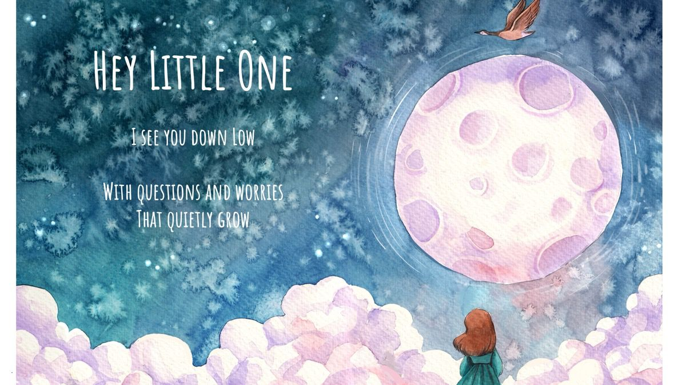
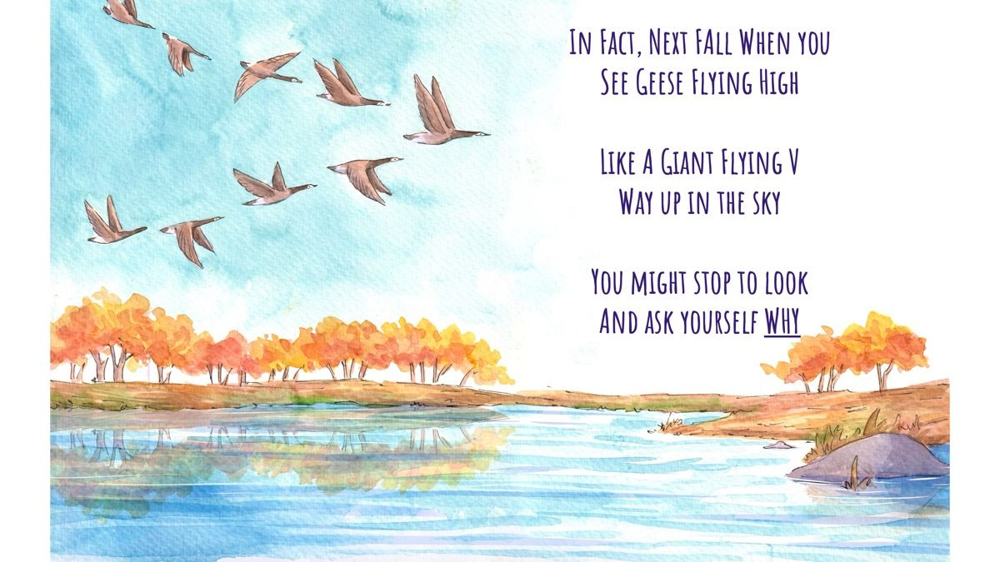
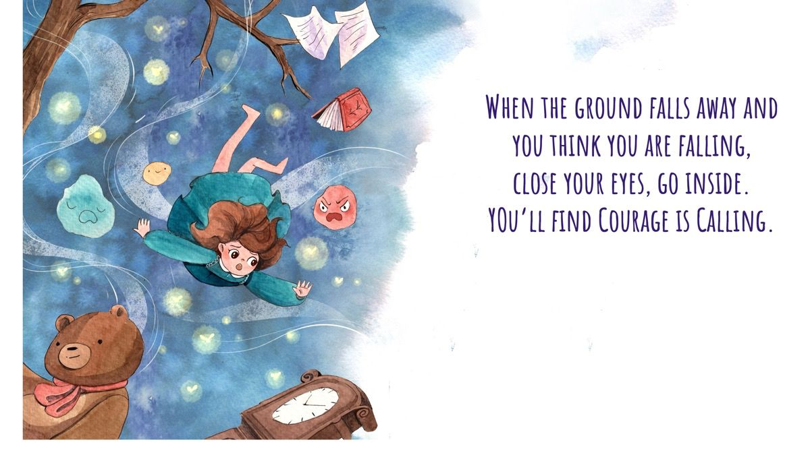
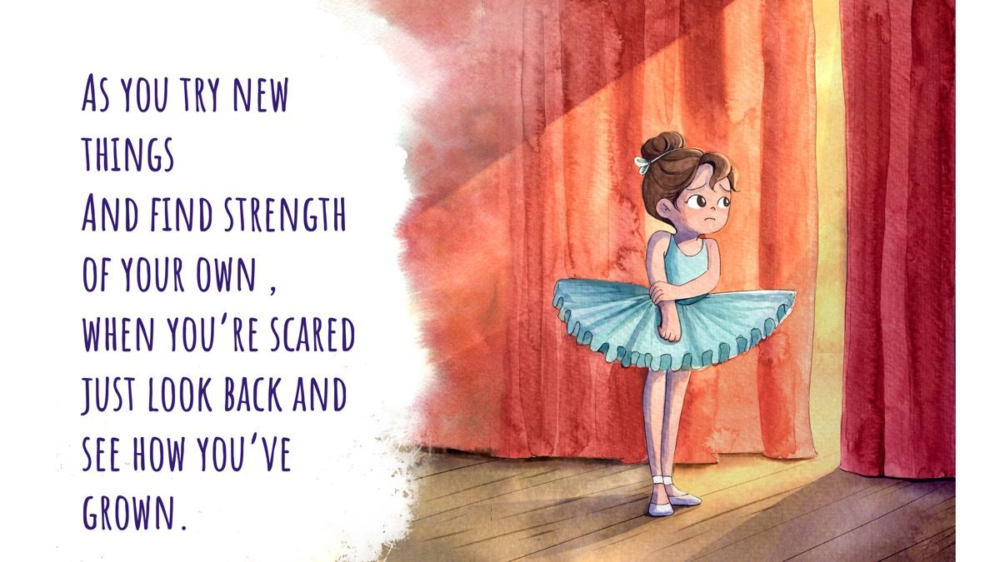

About
My work begins where the retreat ends, at the front door of your home, with your child in your arms.
Clinician, Hoffman Institute teacher, author, and mom. I teach people how to be emotionally present: with themselves first, and then with the people they love most.
On a night shift at UCSF Children’s Hospital, a family had just learned their three-year-old didn’t have the flu. He had leukemia. I saw his mother step into the hallway, press her back against the wall, and slide to the floor. I didn’t know what to say. But I knew she felt alone. So I sat down next to her, close enough that she could feel my shoulder against hers. We sat like that for a while. Eventually she looked up. I hugged her, and she sobbed.
I didn’t have language for what I’d done. I wouldn’t for years. But that moment held the seed of everything that followed: the instinct that presence, not expertise, is what meets people in their darkest moments.
The first is emotional depth, presence, and attunement: what happens in the space between people, and the difference that being truly felt can make in a life. The second is neuroscience. At Stanford I published research on oxytocin, the hormone we experience as love, and its relationship to anxiety in children. Even my science was following the same thread.
In 2015, my own son had a life-threatening accident. I discovered that the presence I’d been able to offer others, I couldn’t access for myself. The following year I attended the Hoffman Process, and something shifted. The attunement I’d practiced outward was profoundly healing when I turned it inward. I have taught for the Hoffman Institute ever since.
But I kept seeing the same thing: adults doing the hard work of healing, then going home to their children without a bridge between the two. That’s where When the Wind Changes came from.
Once or twice a month, a quiet note from me to you. Words you can borrow with your child, a thought from the science of love, a small invitation to slow down. No noise, no funnels. Just a letter.
The Book
Written by Sadie Gardere. Illustrated by Anastasia Khmelevska and R.A. Smith.
Tiny Torch Books, an imprint of The Collective Book Studio. February 2027.
I am with you. I love you. You are never alone.

When the Wind Changes is a picture book for children, and the grownups who love them. It is a story of geese, courage, and the love that carries us through change: the scary nights, the hard goodbyes, the moments when the ground falls away.
It is also an invitation. An invitation for the grownup reading it to slow down, pull the child close, and remember that more is transmitted in touch, tone, and gaze than words could ever convey.



Parents reading to their child at bedtime, or during a challenging time of uncertainty. Grandparents reading to grandchildren. Older siblings reading to younger ones. Teachers focusing on social and emotional learning. Pediatric healthcare workers, child life specialists, and anyone who walks with children through change.
This book is not only for your Little One. It is also for you. Hold your child close as you read, and allow the story to carry you both into a place of emotional connection.
If you feel moved or tender as you read, slow down and take note. Put your hand on your heart and breathe. This is a call to come home. Snuggle your child in as you snuggle yourself in too.
Available February 2027 · Distributed by Simon & Schuster
Are you a bookstore, school, hospital, or library? Contact us about bulk orders →
placeholder wordmarks — official retailer logos go here once assets & pre-order links are confirmed
Emotional Attunement
Most of us were not met, mirrored, and made safe in our most intense emotions as children. So we learned to fear them. The work begins with the adults, not the children. Not with the child’s behavior, not with the right strategy. It begins with our own unfinished emotional business.
When a child is truly met in a big feeling, something changes in their body. They experience what Dan Siegel calls feeling felt: the felt sense of not being alone inside an emotion. That experience, repeated, is how a nervous system learns that feelings can be survived, shared, and softened.
“Feeling felt” coined by Dr. Dan Siegel.
Picture books for children, and the grownups who love them.
Keynotes and workshops on emotional attunement, the science of love, and parenting from presence.
Workshops and retreats for parents, educators, and anyone seeking deeper connection with the people they love.
Clinical practice and facilitation rooted in neuroscience, presence, and the felt sense of being loved.
Speaking & Workshops
Teaching people how to be emotionally present — with themselves first, and then with the people they love most.
Book Sadie to speakFor conferences, schools, hospitals, and organizations. Topics include:
Half-day and full-day experiential workshops for parents, educators, clinicians, and leaders. Designed to move participants from understanding to felt experience.
Small-group retreats co-created with trusted partners. By invitation or application.
For teachers, coaches, and facilitators who want to learn how to hold a room with emotional presence. Work close to my heart: equipping others to carry this kind of presence into their own teaching.
Parents and parent communities. Schools, educators, and healthcare teams. Leaders and leadership teams. Hoffman Institute graduates and staff. Couples and families seeking deeper connection. Anyone walking through change.
Interviews, podcasts, and press from the launch of When the Wind Changes — gathered in one place as the campaign unfolds.
Free resources for the grownups: watercolor coloring pages from the book’s art, conversation guides for big feelings, and printable activities for classrooms and bedtimes.
Once or twice a month, a quiet note from me to you. Words you can borrow with your child, a thought from the science of love, a small invitation to slow down.